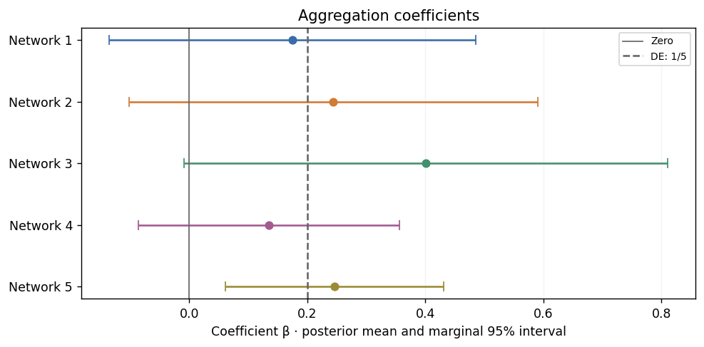
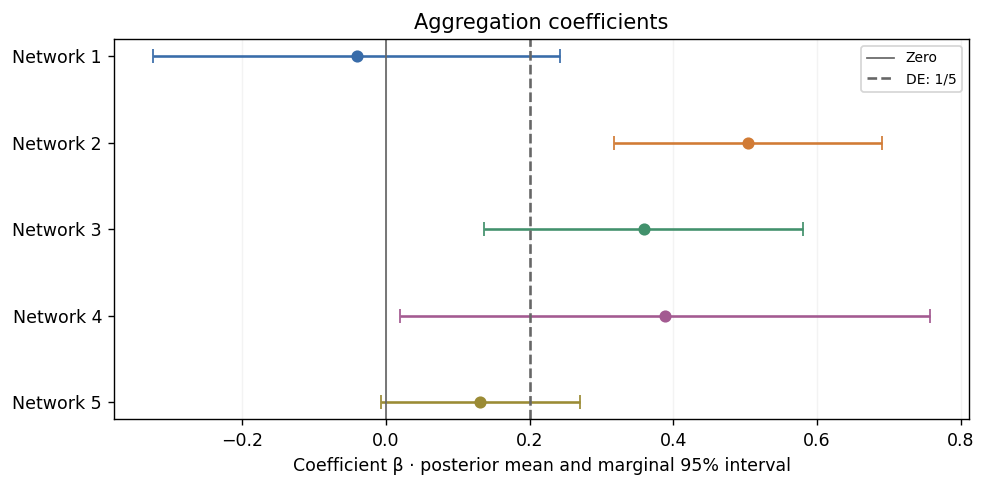
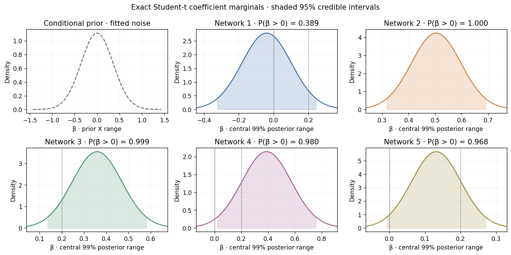
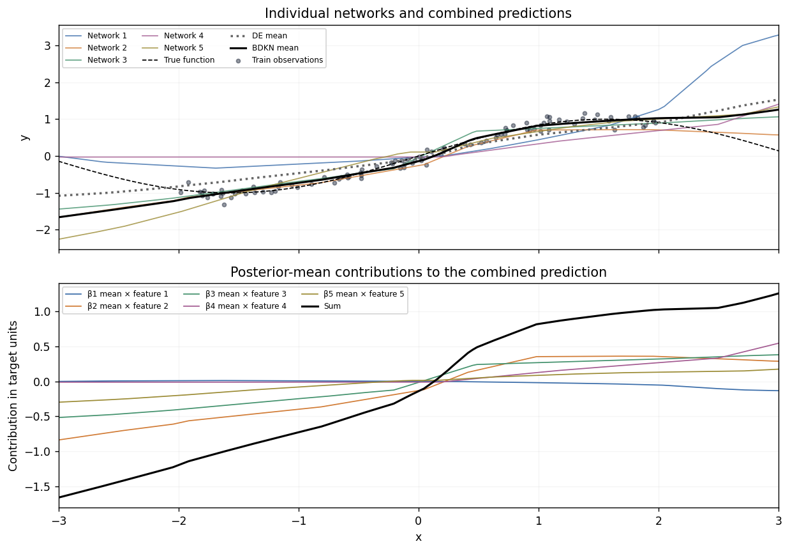
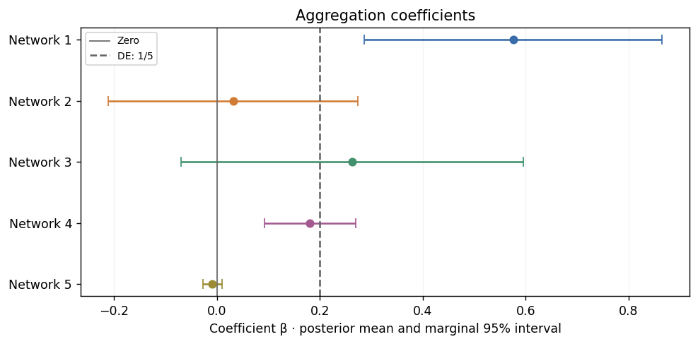
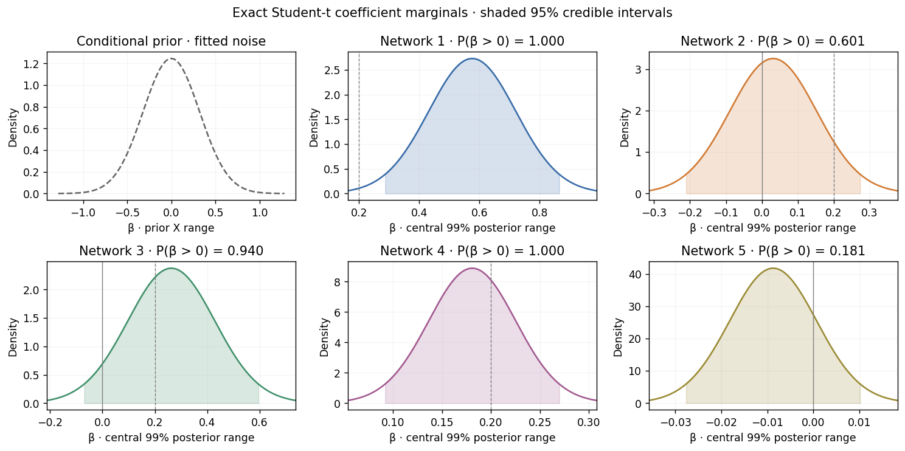
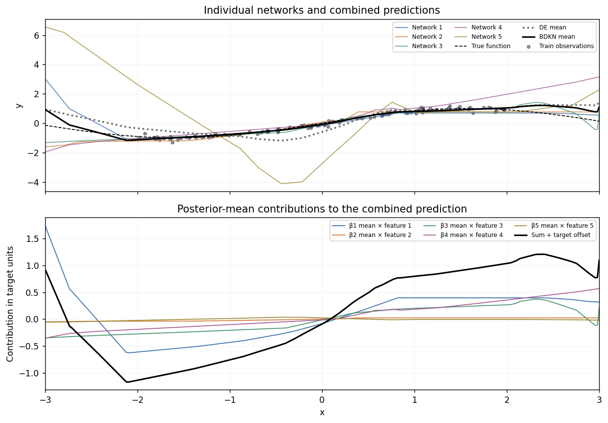
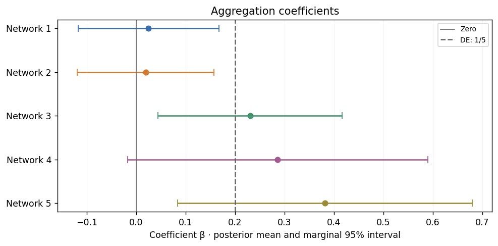
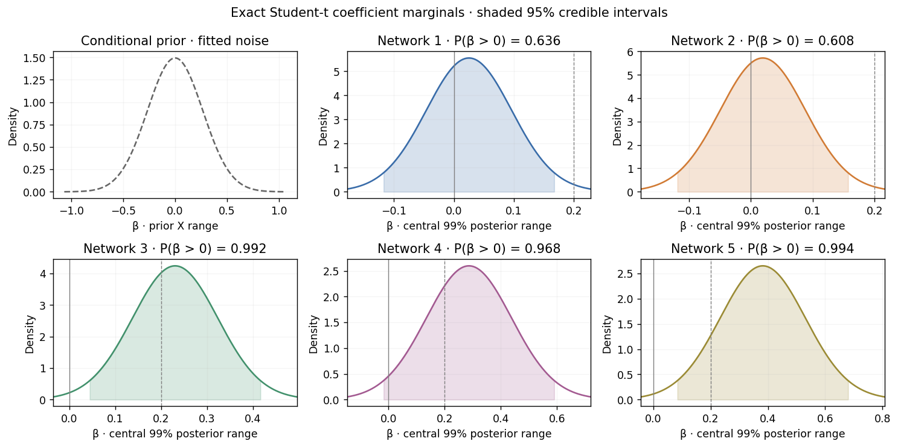
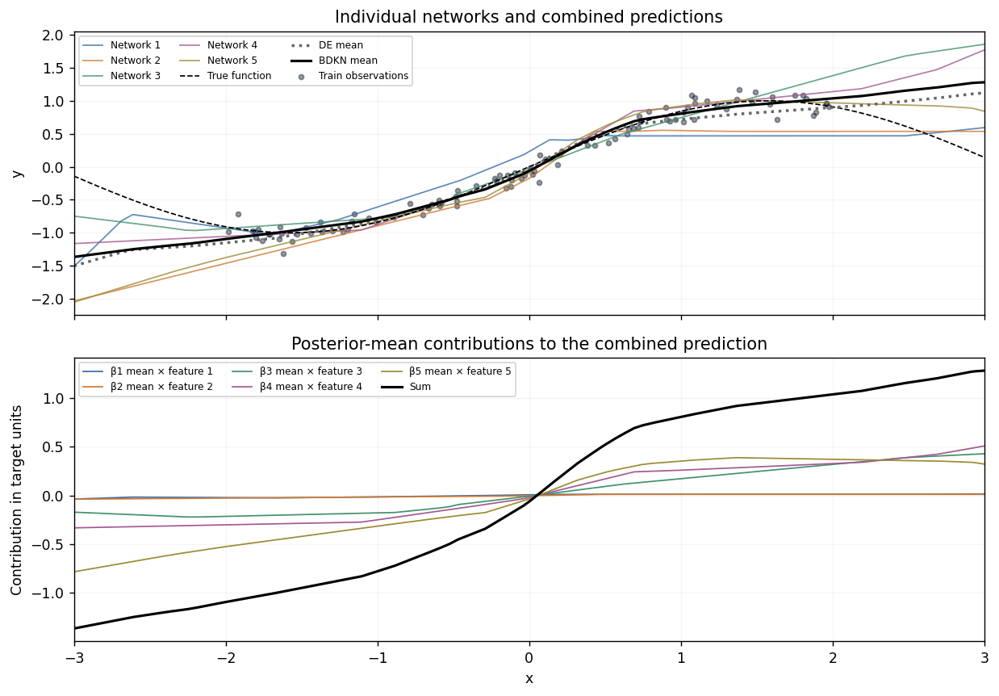

Regression comparison
Download resultsAggregation weights
Coefficients can be negative and need not sum to one. Intervals describe coefficient uncertainty; the dashed reference is DE’s fixed 1/H weight.
BDKN



Each density panel uses its own X range for readability; coefficient intervals above share a common axis. Prior reference conditions on fitted noise. Contribution shares use held-out inputs; test targets are used only for scoring.
| Network | β mean | 95% low | 95% high | P(β > 0) | Contribution share | Test RMSE | Test NLL |
|---|---|---|---|---|---|---|---|
| 1 | 0.17517 | -0.13543 | 0.48577 | 0.86707 | 0.12754 | 0.38313 | 1.62273 |
| 2 | 0.24406 | -0.10258 | 0.59069 | 0.91723 | 0.26779 | 0.49073 | 8.75495 |
| 3 | 0.40074 | -0.00952 | 0.81101 | 0.97227 | 0.28915 | 0.31065 | 1.53182 |
| 4 | 0.13482 | -0.08680 | 0.35643 | 0.88485 | 0.09272 | 0.34041 | 1.33298 |
| 5 | 0.24661 | 0.06158 | 0.43164 | 0.99525 | 0.22280 | 0.48393 | 4.31273 |
Functional repulsion · BDKN



Each density panel uses its own X range for readability; coefficient intervals above share a common axis. Prior reference conditions on fitted noise. Contribution shares use held-out inputs; test targets are used only for scoring.
| Network | β mean | 95% low | 95% high | P(β > 0) | Contribution share | Test RMSE | Test NLL |
|---|---|---|---|---|---|---|---|
| 1 | -0.04044 | -0.32368 | 0.24279 | 0.38877 | 0.02991 | 0.94000 | 1.07906 |
| 2 | 0.50381 | 0.31751 | 0.69011 | 1.00000 | 0.40639 | 0.40031 | 0.98094 |
| 3 | 0.35846 | 0.13631 | 0.58061 | 0.99908 | 0.31347 | 0.38552 | 5.32176 |
| 4 | 0.38849 | 0.02000 | 0.75698 | 0.98050 | 0.12209 | 0.60161 | 1.02719 |
| 5 | 0.13153 | -0.00728 | 0.27034 | 0.96849 | 0.12813 | 0.63106 | 1.26595 |
Weight repulsion · BDKN



Each density panel uses its own X range for readability; coefficient intervals above share a common axis. Prior reference conditions on fitted noise. Contribution shares use held-out inputs; test targets are used only for scoring.
| Network | β mean | 95% low | 95% high | P(β > 0) | Contribution share | Test RMSE | Test NLL |
|---|---|---|---|---|---|---|---|
| 1 | 0.57596 | 0.28676 | 0.86515 | 0.99993 | 0.44922 | 0.55882 | 0.82171 |
| 2 | 0.03132 | -0.21067 | 0.27331 | 0.60107 | 0.02988 | 0.37863 | 3.38289 |
| 3 | 0.26310 | -0.06923 | 0.59543 | 0.94029 | 0.25146 | 0.35137 | 9.60499 |
| 4 | 0.18084 | 0.09194 | 0.26975 | 0.99995 | 0.25003 | 0.96193 | 8.73178 |
| 5 | -0.00874 | -0.02765 | 0.01017 | 0.18079 | 0.01941 | 2.63430 | 2.70684 |
First-order repulsion · BDKN



Each density panel uses its own X range for readability; coefficient intervals above share a common axis. Prior reference conditions on fitted noise. Contribution shares use held-out inputs; test targets are used only for scoring.
| Network | β mean | 95% low | 95% high | P(β > 0) | Contribution share | Test RMSE | Test NLL |
|---|---|---|---|---|---|---|---|
| 1 | 0.02498 | -0.11718 | 0.16714 | 0.63595 | 0.01658 | 0.35204 | 0.98745 |
| 2 | 0.01919 | -0.11878 | 0.15717 | 0.60842 | 0.01796 | 0.54238 | 19.31208 |
| 3 | 0.23034 | 0.04434 | 0.41634 | 0.99213 | 0.23788 | 0.50917 | 1.02667 |
| 4 | 0.28628 | -0.01746 | 0.59002 | 0.96779 | 0.30615 | 0.45027 | 16.03523 |
| 5 | 0.38206 | 0.08425 | 0.67987 | 0.99378 | 0.42142 | 0.51190 | 1.09930 |